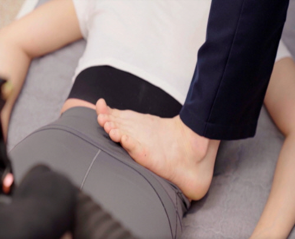

BODY-ALL WIKI
BODY-ALL WIKI
수원 허리디스크·협착증 치료:
뼈를 바로잡아 신경의 길을 여는 바디올 SART 교정

허리디스크나 협착증 진단을 받고 수술을 고민 중이신가요? 혹은 치료를 받아도 통증이 계속 재발하시나요? 수원 인계동 바디올한의원은 "디스크는 결과일 뿐, 원인은 비틀린 구조"라는 관점에서 출발합니다. 디스크를 짓누르는 환경을 바꾸지 않으면 통증은 반복될 수밖에 없습니다.
A. 뼈가 비틀려 '기울어진 환경'은 그대로이기 때문입니다.
비유하자면, 지반이 기울어 기둥(척추)이 휘어졌는데 기둥 옆의 갈라진 벽지(디스크)만 새로 바르는 격입니다. 바디올은 기울어진 지반(골반)을 수평으로 맞추고, 비틀린 기둥(척추)을 바로 세워 디스크가 자연스럽게 제자리로 돌아갈 수 있는 '공간'을 만드는 SART 교정에 집중합니다.
1. 허리디스크의 진짜 원인: "기울어진 바닥"
허리디스크는 결과물입니다. 골반이라는 기초가 무너지면 그 위의 척추는 중심을 잡기 위해 비틀릴 수밖에 없습니다.


- 골반의 불균형: 지면(골반)이 기울면 우리 몸은 척추를 반대 방향으로 꺾어 중심을 잡습니다.
- 비대칭적 압박: 휘어진 척추 마디 사이에서 디스크 한쪽 면에만 과도한 압력이 가해져 수핵이 탈출하게 됩니다.
2. 근육 통증과 피사(Pisa)의 사탑 원리
허리가 아플 때 근육이 딱딱하게 굳는 이유는 근육 자체의 병이라기보다 '뼈를 지탱하기 위한 처절한 노력'입니다.

- 밧줄 역할을 하는 근육: 건물이 기울면 무너지지 않게 한쪽에서 밧줄(근육)로 강하게 당겨야 합니다.
- 근육의 비명: 24시간 내내 뼈를 붙들고 있는 근육은 결국 염증이 생기고 유착됩니다. 밧줄을 주무르는 것보다 탑(뼈)을 수직으로 세우는 것이 근본적인 해결책입니다.
3. 허리디스크 vs 척추관 협착증, 바디올의 처방
| 허리디스크 (추간판탈출증) | 척추관 협착증 |
|---|---|
| 디스크 수핵이 탈출해 신경 압박 | 뼈, 인대가 두꺼워져 신경 통로 협착 |
| SART 교정으로 압박 해소 & 염증 제어 약침 시술 |
SART 교정으로 압박 해소 & 도침 박리로 공간 확보 |

4. 바디올의 3단계 통합 치료 시스템
바디올은 구조적 원인과 기능적 문제를 동시에 해결하여 수술 없이 허리 건강을 회복합니다.
STEP 1. 공간 확보 (SART 교정)비틀린 척추 마디마디를 견인하여 디스크가 쉴 수 있는 공간을 만듭니다.
STEP 2. 유착 박리 (도침 요법)뼈를 붙잡고 있는 질긴 유착 조직을 정리하여 교정의 완성도를 높입니다.
STEP 3. 염증 제어 (고농도 봉약침)눌려 있던 신경의 부종과 염증을 빠르게 가라앉혀 통증을 제어합니다.
5. 365일 야간진료 및 정밀 진단 시스템

- 평일 밤 8시 30분 야간진료: 직장인들도 퇴근 후 집중 교정이 가능합니다.
- 무료 주차 지원: 건물 1층 전용 주차장 완비로 내원이 편리합니다.